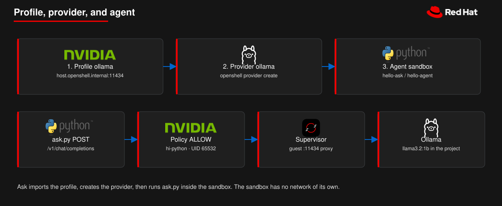

Open the repo in a workspace. Startup installs the OpenShell 0.1.8 CLI. The sandbox project cannot host the gateway, so OpenShift Virtualization runs a guest in that project: Fedora with minikube, or RHEL with MicroShift. Two numbered journeys live under Terminal → Run Task…. Quota holds one u1.large guest plus Ollama, so run A1. Clean or B1. Clean before you start a path. The agent in A5/A6 and B5/B6 runs inside the sandbox and reaches CPU Ollama through host.openshell.internal:11434.
One u1.large guest at a time. GPU quota is 0. The sandbox has no network of its own.
1Open the workspace
Use the button, or in Developer Sandbox open Dev Spaces and create a workspace from this repository. devfile.yaml requests 512Mi / 200m and limits the tools container to 4Gi / 2 CPUs. Storage is ephemeral. On start it runs command 1 below. The other tasks stay manual (Terminal → Run Task…). Run them in the workspace shell: that shell can resolve minikube-vm.<project>.svc.cluster.local and rhel-vm.<project>.svc.cluster.local. A laptop cannot.
Pieces of the circuit
Policy
deploy/hi-python.policy.yaml — filesystem and UID. The hardened image runs as 65532/65532.
Profile
deploy/ollama.profile.yaml — the only host the sandbox may ask the supervisor to dial: host.openshell.internal:11434. No credential. Loopback is always blocked.
Provider
openshell provider create --name ollama --type ollama — registers Ollama as the named inference backend on this gateway.
Agent
An OpenShell sandbox (hello-ask or hello-agent) that runs examples/ask.py. It has no network of its own.
Supervisor
On the guest. It makes the allowed outbound connection. Here that hits a TCP proxy on the guest that forwards to Ollama in this OpenShift project.
2Devfile commands
These are the exec commands under Terminal → Run Task…. Run A1. Clean or B1. Clean before you start a path. A2. Start minikube VM and Ollama starts CPU Ollama in this project and then runs connect. Restart the workspace once so the openshell-ui endpoint exists. Task names stay in English because that is the IDE text.
scripts/sandbox-vm-up.sh prints oc whoami and the quota, then starts CPU Ollama (llama3.2:1b, 4Gi) in this project and applies deploy/sandbox-minikube-vm.yaml. The model pull runs while the guest disk clones, so A5 / A6 do not wait on that image. OpenShift Virtualization clones the fedora DataSource from openshift-virtualization-os-images. There is no custom image. runStrategy is Manual. Inline cloud-init names fedora and curls scripts/minikube-guest-boot.sh.
The guest script runs as root. minikube 1.39 needs --force (DRV_AS_ROOT). It stops if landlock is missing from /sys/kernel/security/lsm. Developer Sandbox stops Linux VMs after one hour. If the VM already exists, the script leaves the disk and cloud-init alone, so a new boot script needs A1. Clean first. Connect waits up to 40 minutes for /var/lib/hello-openshell/ready. The guest log is /var/log/cloud-init-output.log.
A4Create the smoke sandbox
Task A4. Create minikube sandbox connects the CLI to https://127.0.0.1:8080 through an SSH tunnel, selects the gateway minikube, and creates model-check. That sandbox only prints ok. It does not import the Ollama profile yet.
OpenShell 0.1.8 needs Landlock ABI v3 on the guest kernel. Expected result: ok and phase Completed. Task A8. Inspect cluster prints the logs.
A5Profile, provider, and agent
Tasks A5 / A6 and B5 / B6 are the same path as make ask. After the gateway is connected they add the Ollama profile, register the provider, create the agent sandbox, and run examples/ask.py inside it. You can run the same commands in the workspace terminal.

The agent runs in the sandbox. The sandbox has no network of its own. The supervisor dials the guest; a proxy there reaches Ollama in this project.
1. Import the profile and create the provider
deploy/ollama.profile.yaml allows only host.openshell.internal:11434 (REST, enforce). It lists Python 3 binaries and stores no key. Do not put 127.0.0.1 or localhost in a profile: OpenShell always blocks loopback from the sandbox.
Ask tasks skip import if openshell profile get ollama already succeeds on that gateway. They do not run openshell gateway remove when the gateway is already connected, so a second Ask does not hit custom provider profile 'ollama' already exists.
2. Create the agent sandbox
The agent is not a separate CR. It is an OpenShell sandbox from registry.access.redhat.com/hi/python:3.12 with --provider ollama and --policy deploy/hi-python.policy.yaml. A5 names it hello-ask (lists models, English prompt). A6 names it hello-agent (Spanish prompt). The process is examples/ask.py inlined as python3.12 -c.
openshell sandbox create \
--name hello-agent \
--from registry.access.redhat.com/hi/python:3.12 \
--provider ollama \
--policy deploy/hi-python.policy.yaml \
--env OPENAI_BASE_URL=http://host.openshell.internal:11434/v1 \
--env MODEL_NAME=llama3.2:1b \
--env OPENAI_API_KEY=fake \
--env ASK_PROMPT='Explica en una frase que es un sandbox y por que un agente deberia correr dentro de uno.' \
-- /usr/bin/python3.12 -c "$(cat examples/ask.py)"
The image user is UID 65532 and its primary group is 0, so the policy pins both to 65532. fake is a placeholder: the OpenAI client requires a key, Ollama does not validate it, and the process can see the value. A real credential belongs on a provider, attached with --provider, not in --env.
3. How the request leaves the sandbox
ask.py reads OPENAI_BASE_URL and POSTs /v1/chat/completions (A5 also GETs /v1/models).
The profile allows that host and port. The policy allows /usr/bin/python3.12.
The supervisor on the guest dials host.openshell.internal:11434. Connect sets OpenShell server.hostGatewayIP so Kubernetes sandbox pods can resolve that name (they have no DNS of their own).
A2 or B2 applies deploy/sandbox-ollama.yaml (CPU Ollama llama3.2:1b, 4Gi, GPU quota 0). Connect installs a TCP proxy on the guest so :11434 forwards to the Ollama ClusterIP in this project. The 1b model does not compete for the guest's 8Gi.
Ollama answers. The sandbox never has a route of its own.
A7OpenShell UI
OpenShell 0.1.8 has no web console. Task A7. OpenShell UI (or B7) runs openshell term inside ttyd on port 7681. Dev Spaces publishes the openshell-ui endpoint as a Route. Open it from PORTS or the Route host. Leave the task running.
BRHEL + MicroShift, in order
Quota cannot hold two u1.large VMs plus Ollama. If minikube-vm is Running, run B1. Clean first. Then:
In the Dev Spaces terminal, save it before Connect:
mkdir -p ~/.config/hello-openshell
# paste the JSON into ~/.config/hello-openshell/openshift-pull-secret
chmod 600 ~/.config/hello-openshell/openshift-pull-secret
B2. Start RHEL VM and Ollama — creates rhel-vm or starts it if it already exists, and starts CPU Ollama in this project. Developer Sandbox stops Linux VMs after one hour; run B2 again when the status is Stopped.
Wait until the VM is Running. Do not start B4 yet.
B3. Connect MicroShift — copies the pull secret, waits for cloud-init (one RPM lock), installs MicroShift if needed, and registers the gateway microshift. Leave it running; first boot can take tens of minutes.
If B3 prints The guest has no pull secret, the file in step 2 is missing or has no auths. Fix the file, then B3 again. No Clean.
If SSH says Connection refused and vm=Stopped, run B2, then B3. No Clean.
If you see /var/lib/rpm/.rpm.lock, cloud-init and B3 raced. Wait, then B3 again. The guest script now waits on that lock.
When B3 prints that the gateway is up, run B4, then B5 / B6 (same profile, provider, and agent circuit), then B7 / B8 if you want the TUI or logs.
B2RHEL VM and Ollama
Task B2. Start RHEL VM and Ollama applies deploy/sandbox-rhel-vm.yaml and starts CPU Ollama in this project so B5 / B6 do not wait on the model pull. The guest is rhel-vm, cloned from DataSource rhel9 with preference rhel.9. Login is cloud-user. The password is in ~/.config/hello-openshell/rhel.password. The workspace SSH key is the same as the Fedora VM. If the VM object already exists, B2 leaves the disk and cloud-init alone and only starts it.
From a laptop, oc port-forward svc/rhel-vm 2222:22 and SSH to 127.0.0.1 on port 2222.
B3Connect MicroShift
This guest does not install minikube. The catalog image has no subscription, so scripts/microshift-guest-boot.sh takes MicroShift 4.22 from mirror.openshift.com and base packages from AlmaLinux 9 (rpm --replacefiles for one GPG conflict). B3 fails immediately unless ~/.config/hello-openshell/openshift-pull-secret is a Red Hat pull-secret JSON with auths. MicroShift pulls quay.io/openshift-release-dev; an empty secret is rejected. Cloud-init and B3 share a lock so they do not fight over /var/lib/rpm/.rpm.lock. If the VM is Stopped, B3 starts it again.
The disk has no LVM volume group and no storage provisioner. The gateway volume is hostPath. Pin rhel-vm in the guest /etc/hosts (the boot script does this) so the API server does not dial the Service when it looks up the node. A sandbox workspace claim is 2Gi on hostPath.
B4Sandbox and Ask on MicroShift
After B3, run B4 for the smoke sandbox, then B5 / B6 for the same profile, provider, and agent circuit on the microshift gateway. Those tasks set SANDBOX_GATEWAY=microshift so they do not pick minikube. Expected smoke test: ok and phase Completed.
Tasks A1. Clean and B1. Clean run the same script. They stop the SSH tunnel and delete minikube-vm, rhel-vm, Ollama, and objects labeled app.kubernetes.io/part-of=hello-openshell. They do not delete shared models or the workspace. Run Clean before you switch guests.
Gateway. A Developer Sandbox project cannot create CRDs, namespaces, or ClusterRoles, and agents.x-k8s.io is not served, so Helm chart 0.1.8 cannot install in the project itself. The chart runs inside the guest (minikube or MicroShift). Do not pass OpenShift SCC values into minikube. A cluster you administer is the OpenShift AI module. Cloud Shell cannot run a sandbox: that kernel lacks Landlock.